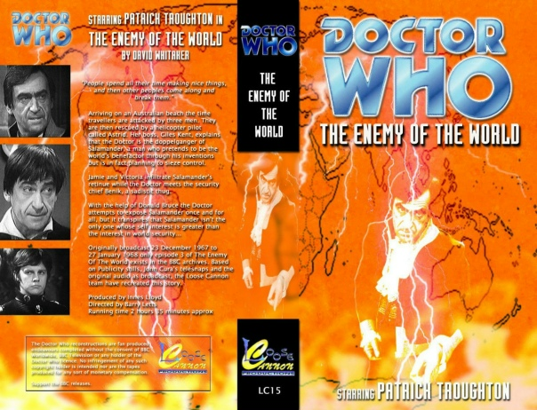
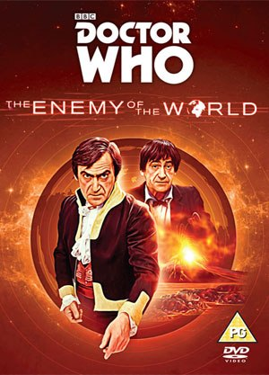
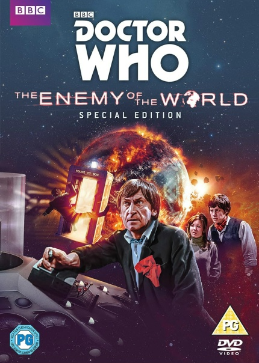
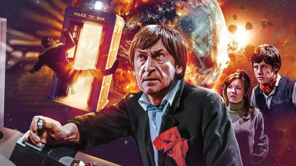

Эра Второго Доктора (5 сезон)
<<< НАЗАД ||| 4. Враг мира ||| ДАЛЬШЕ >>>
Субтитры: Русские и Английские |  |
|---|
23 декабря 1967 - 27 января 1968
6 эпизодов по 25 мин.
| Изначально сохранился только 3-й эпизод - 16mm t/r * В 2013 году найдены все эпизоды - 16mm t/r |
|---|
 |  |
«Враг мира» — политический триллер в масштабах всей планеты: в 2018 году Земля балансирует на грани диктатуры, а угроза исходит не из космоса, а от человека — Рамона Саламандера, харизматичного лидера, который знает слишком много и обещает слишком многое; Доктор сталкивается с собственным двойником, и в этой зеркальной игре обмана каждый шаг грозит перекроить будущее, а спасение мира держится на том, чтобы отличить истину от искусно выстроенной лжи. Тон истории — напряжённый и параноидальный, будто сама эпоха затаила дыхание, ожидая, кто первым сорвётся в пропасть власти.
 DVD (3эп.) - 1 ноября 2004 |  LC recon (не актуально) |
|---|---|
 DVD - 25 ноября 2013 |  DVD - 26 марта 2018 * Версия в нашей группе |


